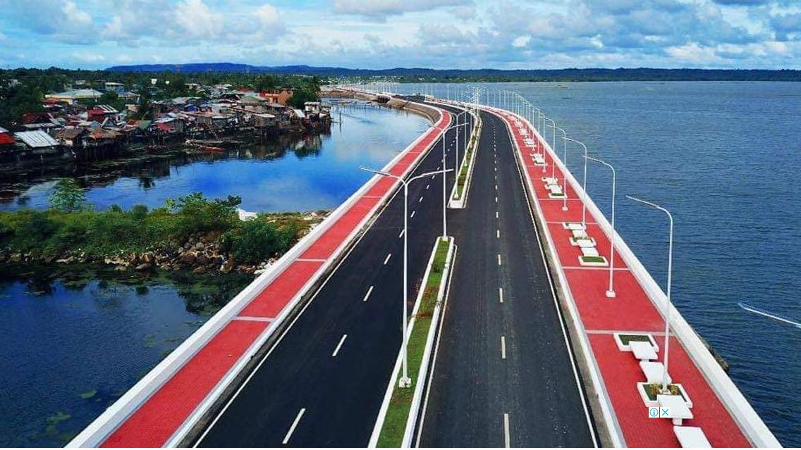

Overview
Agriculture, sea, and tourism
Sorsogon's economy is anchored in agriculture, fishing, and a growing tourism sector. A large portion of the workforce engages in rice and abaca farming, coconut production, and small-scale fishing along its extensive coastline.
Eco-tourism centered on Donsol's whale sharks has become an increasingly important driver of income and employment. The province is also home to the Bacon-Manito Geothermal Power Plant, one of Luzon's significant energy sources.

Sectors
Industries & livelihoods
| Sector | Key Products | Major Areas | Role |
|---|---|---|---|
| Agriculture | Rice, coconut, abaca, vegetables | Irosin, Juban, Magallanes | Primary rural livelihood |
| Fishing | Marine fish, shellfish, seaweed | Donsol, Gubat, Matnog | Food supply and export |
| Tourism | Whale sharks, beaches, trekking | Donsol, Matnog, Bulusan | Growing employment and revenue |
| Abaca Industry | Fibre, handicrafts, export | Irosin, Juban, Bulusan | Key export commodity |
| Coconut Industry | Copra, oil, coco-lumber | Province-wide | Longstanding agricultural export |
| Geothermal Energy | Power generation | Irosin (Bacon-Manito) | Regional energy supply |
| Handicrafts | Abaca bags, bamboo, woodcraft | Sorsogon City, Irosin | SME and export income |
Resources
Natural resources
Marine Resources
Rich coastal and pelagic fisheries support thousands of fishing families. Marine sanctuaries protect spawning grounds.
Geothermal Energy
The Bacon-Manito plant taps volcanic heat from the Irosin caldera, contributing to Luzon's electricity grid.
Abaca Fibre
Sorsogon is a top abaca-producing province. The fibre is exported globally for specialty paper, rope, and eco-textiles.
Coconut & Timber
Vast coconut plantations and managed forests provide materials for food processing, construction, and craft industries.